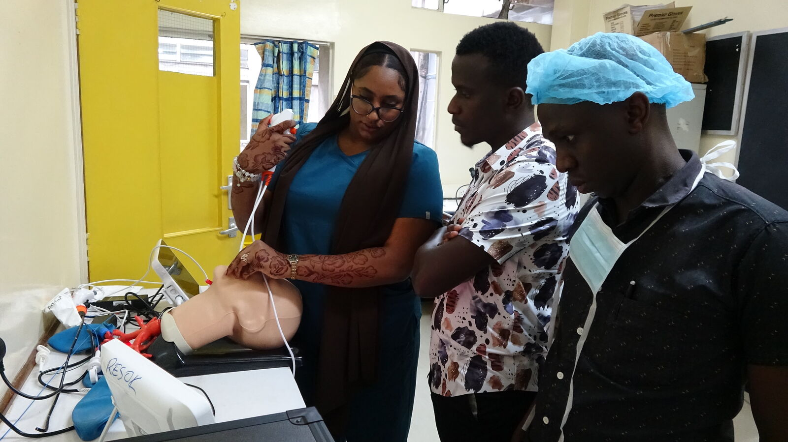
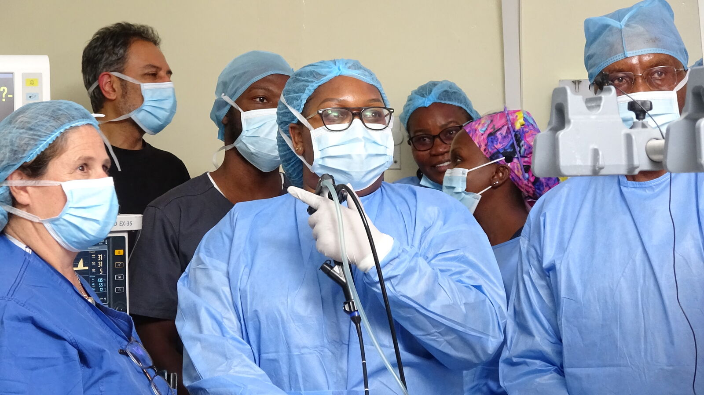
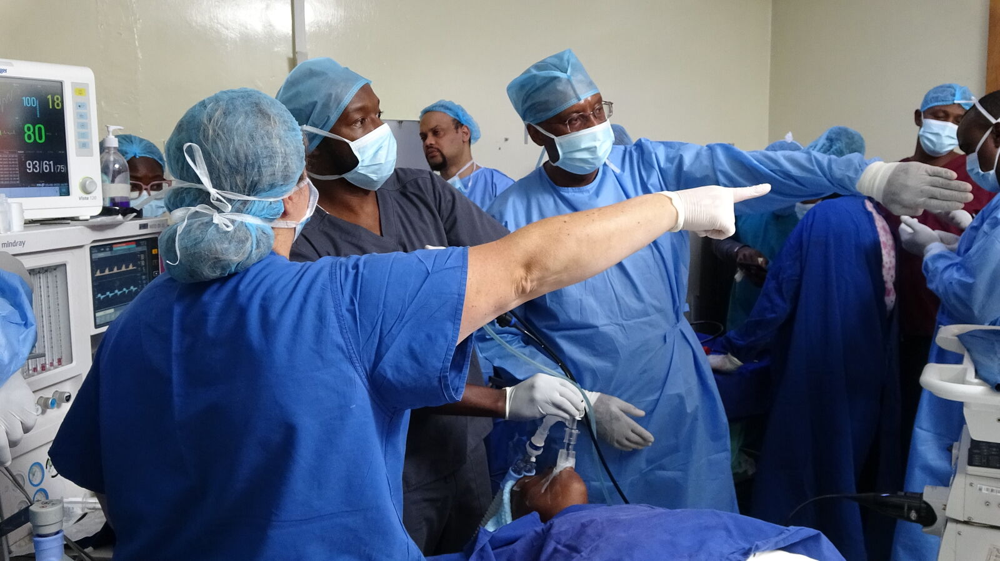
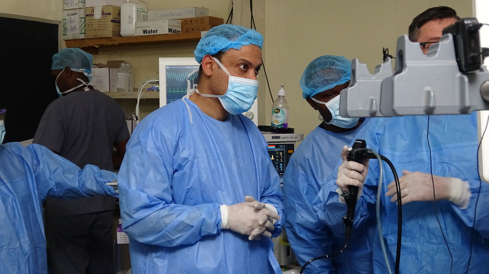
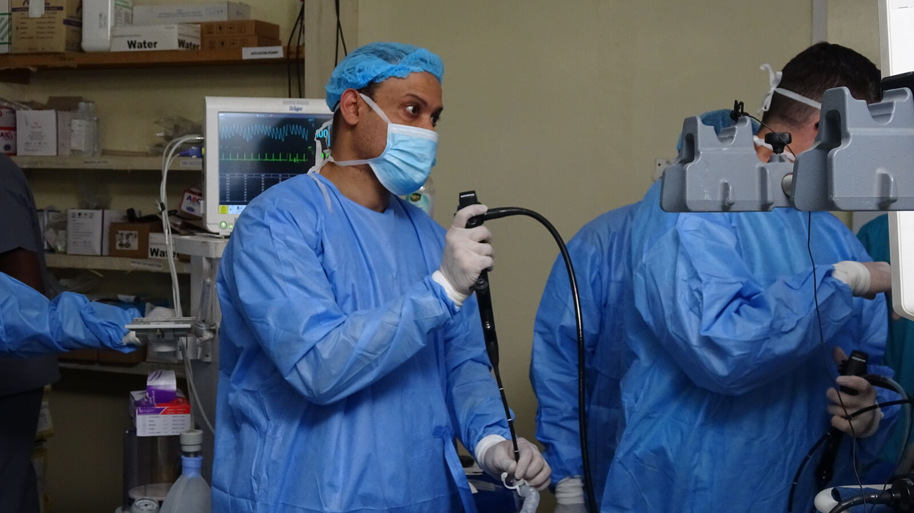
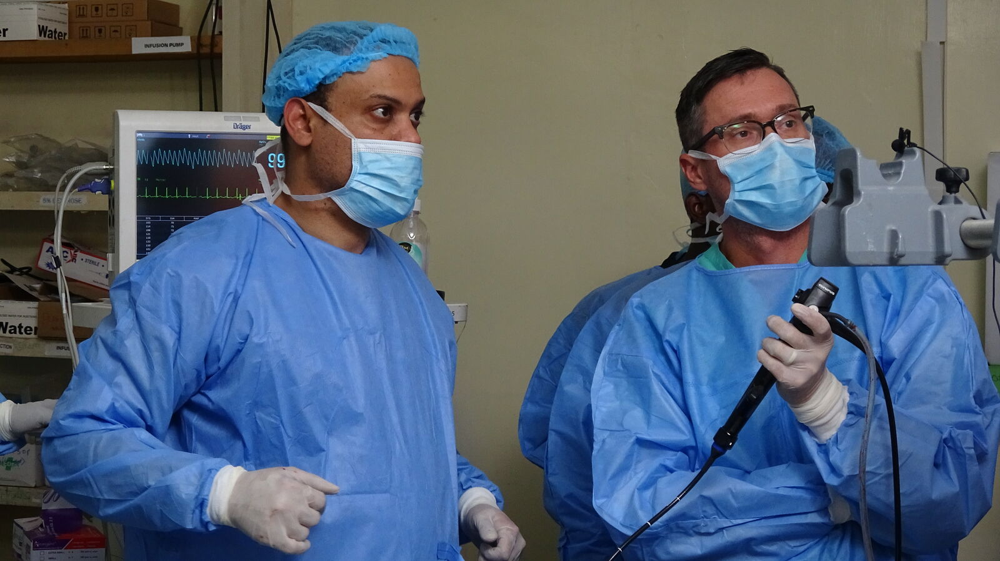

Advancing Lung Health Through Skills: Inside the EBUS and Basic Bronchoscopy Workshop at Kenyatta National Hospital
When it comes to lung health, the difference between uncertainty and a clear diagnosis can often come down to having the right expertise, technology, and confidence to look deeper.
This was at the heart of the EBUS and Basic Bronchoscopy Workshop at Kenyatta National Hospital, an intensive three-day learning experience focused on equipping healthcare professionals with practical knowledge and techniques for the diagnosis and management of respiratory conditions using modern, minimally invasive approaches.
Through expert-led teaching, live demonstrations, simulation-based practice, and structured clinical case discussions, the workshop created an environment where participants could move beyond theory and engage directly with the realities of respiratory procedures. It was a space to learn, practise, ask questions, troubleshoot challenges, and build the confidence needed to translate new knowledge into patient care.
At its core, the programme reflected a simple but important principle: improving outcomes for people living with lung disease begins with ensuring that healthcare professionals have the knowledge and tools to recognize disease early, investigate it accurately, and make informed decisions about treatment.
Moving Beyond the Basics of Bronchoscopy
Bronchoscopy gives clinicians a direct view of the airways and plays an important role in investigating a wide range of respiratory conditions. However, performing the procedure effectively requires more than familiarity with the equipment. It demands a clear understanding of anatomy, careful technique, sound clinical judgement, and attention to patient safety.
The workshop began with these essential foundations.
Participants explored airway anatomy and the principles of bronchoscopy before progressing to practical aspects of scope handling and navigation. They were introduced to procedures including bronchoalveolar lavage, biopsy techniques, and diagnostic specimen collection, with attention to how each stage contributes to obtaining reliable clinical information.

These technical steps have a direct bearing on patient care. The quality of a specimen, the precision with which it is obtained, and the way it is handled can all influence the accuracy of a diagnosis and the treatment decisions that follow.
By grounding participants in these fundamentals, the workshop provided a strong platform for progressing into more advanced procedures and clinical scenarios.
Bringing Learning Into the Procedure Room
One of the most valuable aspects of the workshop was the opportunity to observe techniques being applied in real clinical situations.
Live procedures offered participants a practical view of how endobronchial ultrasound (EBUS) can be used to evaluate lymph nodes and support the staging of lung cancer. For clinicians, observing the procedure in practice provided an important connection between what is taught in theory and what happens at the bedside.
EBUS is an important development in respiratory medicine, offering a minimally invasive way of investigating structures around the airways and obtaining samples that can help guide diagnosis and treatment.
The workshop complemented these live demonstrations with simulation-based learning. Participants had the opportunity to practise transbronchial needle aspiration (TBNA) techniques in a controlled setting, allowing them to repeat procedures, refine their approach, troubleshoot difficulties, and develop greater confidence before encountering similar situations in clinical practice.

This blend of observation and hands-on learning was central to the programme. Participants were not simply shown how a procedure works; they were encouraged to understand the reasoning behind each step and to engage with the practical challenges that can arise during respiratory interventions.
Learning Through Real Clinical Challenges
Respiratory medicine rarely follows a perfectly predictable script.
Patients may present with overlapping symptoms, unusual findings, difficult anatomy, or complex diagnostic questions. For clinicians, this means that procedural knowledge must be accompanied by adaptability, problem-solving, and the ability to make sound decisions in real time.
The workshop brought this reality into the learning environment through discussions and demonstrations centred on clinical cases.
Participants engaged with scenarios involving tuberculosis, foreign body removal, specimen handling, biosafety, and complex airway navigation. These cases encouraged consideration of not only how a procedure is performed, but also why a particular approach may be appropriate for a specific patient.
The focus on tuberculosis was especially relevant to respiratory care in settings where the disease remains an important health concern. Obtaining appropriate specimens safely and effectively is an important part of establishing an accurate diagnosis and ensuring that patients can proceed to appropriate treatment.

Attention to biosafety further reinforced the responsibility that accompanies respiratory procedures. Protecting patients and healthcare workers requires careful adherence to infection prevention measures, appropriate specimen handling, and a clear understanding of the risks associated with diagnostic procedures.
In this way, the workshop connected technical proficiency with the broader principles of safe, high-quality clinical care.
From Skill-Building to Advanced Clinical Thinking
As the programme progressed, participants moved from foundational techniques into increasingly complex scenarios requiring greater clinical judgement.
Advanced sessions explored cases involving sarcoidosis and complex EBUS procedures, giving participants an opportunity to consider the challenges that arise when respiratory disease does not present in straightforward ways.
The programme also addressed emergency airway bleeding management, an important area of preparation for anyone performing bronchoscopic procedures. Although complications may be uncommon, knowing how to recognize and respond to them can make a critical difference when they occur.
These sessions reinforced an important lesson: successful bronchoscopy is not simply about mastering the mechanics of a procedure. It also involves knowing when and why to intervene, understanding the limitations of a technique, anticipating potential complications, and responding appropriately when unexpected situations arise.

That combination of technical ability and clinical judgement is what ultimately makes specialized respiratory care safer and more effective.
Growing a Stronger Respiratory Workforce
At its core, the workshop was about people - the healthcare professionals who stand between advances in respiratory medicine and the patients who need them.
Technology can open new possibilities for diagnosis and treatment, but its value depends on the people who know how to use it. Creating opportunities for clinicians to learn from experienced faculty, practise new techniques, and share experiences helps ensure that advances in respiratory medicine can be translated into everyday care.
A clinician who gains confidence in bronchoscopy and EBUS can use that knowledge not only in individual patient encounters, but also through mentorship, teamwork, and knowledge-sharing with colleagues.
This is closely aligned with the work of the Respiratory Society of Kenya (ReSoK) and its commitment to advancing lung health through education, training, research, and professional collaboration.
By bringing respiratory professionals together around practical learning and shared clinical experiences, initiatives such as this help nurture a community of practitioners who can continue learning from one another while contributing to better respiratory care across Kenya.

Putting Patients at the Centre
Behind every bronchoscopy procedure is a patient waiting for answers.
It may be someone with persistent respiratory symptoms. Someone undergoing investigation for suspected lung cancer. Someone requiring further evaluation for tuberculosis or sarcoidosis. Or someone whose diagnosis remains uncertain and whose treatment depends on obtaining the right information.
For such patients, access to appropriately trained professionals and modern diagnostic techniques can make a meaningful difference.
A timely and accurate procedure can help clarify a diagnosis. A good-quality specimen can provide the information needed to guide treatment. A minimally invasive approach can reduce the burden associated with more invasive investigations. And a clinician who is confident in managing potential complications can help ensure that the procedure is performed as safely as possible.
Ultimately, the value of a workshop such as this extends beyond the classroom and procedure room. Its greatest significance lies in what participants are able to take back to their hospitals, their teams, and, most importantly, their patients.
Looking Ahead for Lung Health in Kenya
The EBUS and Basic Bronchoscopy Workshop at Kenyatta National Hospital speaks to a broader need within respiratory medicine: ensuring that healthcare professionals are able to keep pace with advances in diagnosis while responding to the realities of the patients they serve.

Lung diseases are diverse, and their diagnosis can be complex. Meeting these challenges requires continuous learning, collaboration, research, and access to appropriate technologies and expertise.
This is where the role of professional societies such as ReSoK becomes particularly important. By creating spaces for learning, professional exchange, research, and mentorship, ReSoK contributes to a respiratory community that is better prepared to respond to the changing needs of patients and the health system.
The workshop also highlighted the value of collaboration. Faculty, participants, institutions, partners, and sponsors each played a role in creating an environment where knowledge could be shared and practical skills developed.
Their collective contribution reflects what is possible when professionals and organizations come together around a common purpose: improving the quality of lung health care and ensuring that patients have access to timely, safe, and effective respiratory services.
The EBUS and Basic Bronchoscopy Workshop was therefore more than a three-day programme of lectures, demonstrations, simulations, and case discussions. It was an opportunity to learn from experience, practise new techniques, exchange knowledge, and strengthen confidence in caring for patients with complex respiratory conditions.
For ReSoK, such initiatives are part of a continuing journey - one that places knowledge, collaboration, research, and patient-centred care at the heart of advancing lung health in Kenya.
And as more healthcare professionals gain exposure to modern diagnostic techniques and share their knowledge with others, the impact reaches far beyond the workshop itself: into hospitals, into clinical practice, and ultimately into the lives of the patients whose search for answers begins with a simple but important question - what is happening inside my lungs?